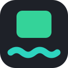
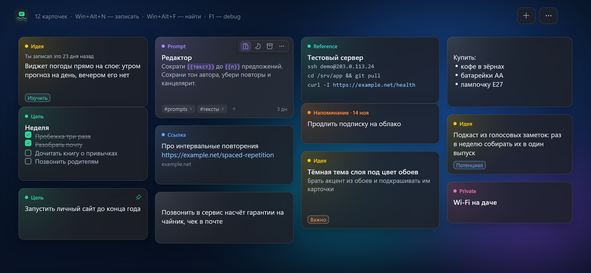
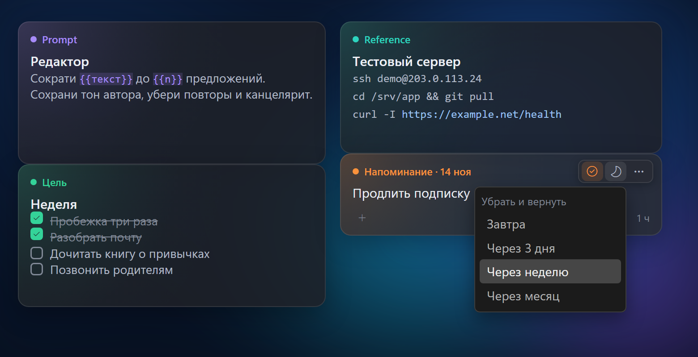
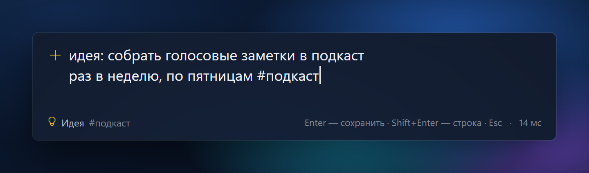
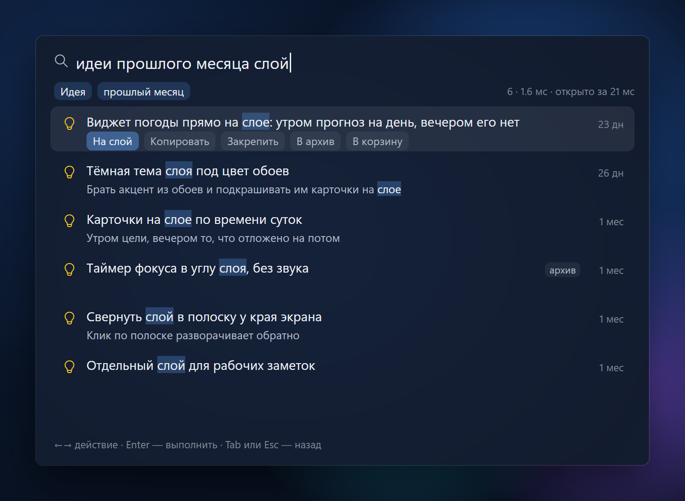
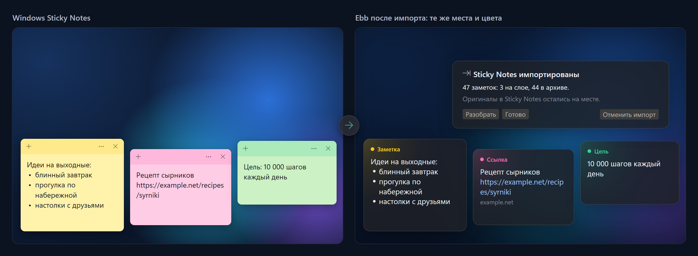
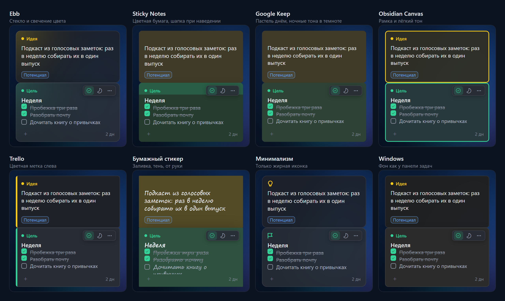

Ebbзаметки на втором мониторе Windows
Ebb заменяет разбросанные Sticky Notes: идеи, prompts, ссылки, цели и напоминания лежат стеклянными карточками на отдельном мониторе — под окнами, не на панели задач. Записали, перестали держать в голове, а Ebb вернёт нужное в поле зрения.
Windows 10 1809+, лучше Windows 11. Установщик без прав администратора или портативный zip. Бесплатно, лицензия MIT.

Записать, забыть, вернуть в нужный момент.
Win+Alt+N из любой программы; тип и #теги прямо в тексте.В покое — текст и цвет типа. Остальное появляется под курсором.

Заметка, идея, prompt, ссылка, цель, напоминание, reference и private. Тип читается из текста, сменить его — клик по метке или цифра.
Строка с «- » показывается с маркером, «- [ ]» — с чекбоксом; клик отмечает пункт сделанным.
В reference каждая команда, путь или адрес копируется кнопкой у строки. В prompt {{переменные}} видны как чипы.
Пароли и ключи шифруются средствами Windows (DPAPI), в поиск не попадают, копируются не показываясь.
Одно сочетание клавиш из любой программы.

Win+Alt+N — записать мысль. Тип и #теги распознаются прямо из текста, Enter — и карточка на слое.
Win+Alt+F — поиск по всем заметкам, включая архив. Фильтры словами: «идеи прошлого месяца», #тег.Открытые заметки встают на слой там же, где лежали, и в своих цветах.

Ebb сам находит Sticky Notes и предлагает импорт. Открытые заметки — на слой, остальные — в архив, где их найдёт поиск.
Читается копия базы Sticky Notes. Пустые и дубликаты пропускаются, импорт можно отменить одной кнопкой.
После импорта «Разобрать» группирует заметки: пароли, ссылки, промпты, идеи — решение одной кнопкой на группу.
Восемь видов карточек, светлая и тёмная тема.

Заметки лежат в одном файле SQLite у вас на диске, резервная копия делается раз в неделю. Без явного действия данные не покидают компьютер.